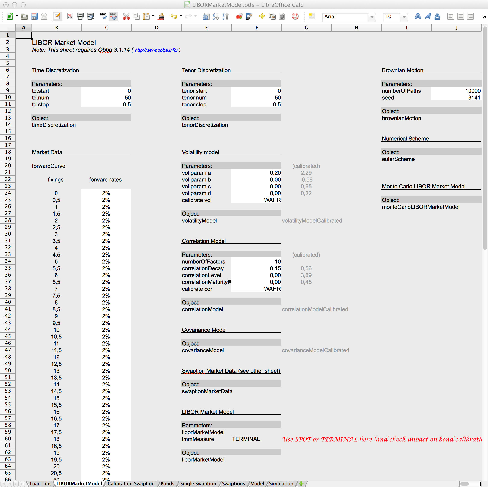
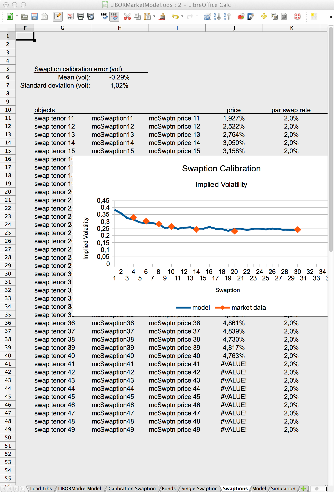

LIBOR Market Model
This page describes the implementation of a simple LIBOR Market Model. The model is single-currency, single-curves (although extensions are straight forward).
Methodology
For details on the methodology see
-
Fries, Christian: Mathematical Finance. Theory, Modeling, Implementation. Wiley 2007. ISBN 0-470-04722-4.
Spreadsheet (beta version)


Spreadsheet interface to Java classes related to the LIBOR market model. Left: model specification sheet. Right: Swaption implied volatility calibration.
The spreadsheets are given in Excel (xls) and OpenOffice (ods) format.
In order to run the spreadsheet you have to install the Java Object Handler for Spreadsheets, "Obba".
-
LIBOR Market Model.zip
-
LIBOR Market Model
The sheet allows to create a LIBOR market model calibrated to a given forward curve
and given swaptions. The parametrised volatility and correlation can be inspected.
Generated interest rate scenarios can ben extracted.
Usage
From Spreadsheet
The ZIP archive above contains a spreadsheet which shows creation, calibration and inspection of a LIBOR market model.
Programmatically
The class LIBORMarketModelValuationTest contains some Java code demoing the programmatically creation and calibration of a LIBOR market model. See
LIBORMarketModelValuationTest.java.
The steps to build and use a LIBOR market model Monte-Carlo simulation are as follows:
-
Create a tenor time discretization:
This is the discretization of the forward curve, i.e., the tenor. We create an object implementing the interface TimeDiscretizationInterface. Example is an object of class TimeDiscretization.
-
Create a forward curve (the initial data of the LIBOR market model):
We create an object implementing ForwardCurveInterface, e.g., by creating an object via ForwardCurve.createForwardCurveFromForwards().
-
Create a simulation time discretization:
We create an object implementing the interface TimeDiscretizationInterface. Example is an object of class TimeDiscretization.
-
Create a covariance model, that is the diffusion of the LIBOR market model: We create a covariance model by creating separate volatility and correlation models:
-
Create a LIBORVolatilityModel, e.g., by instantiating an object of class LIBORVolatilityModelFromGivenMatrix.
-
Create a LIBORCorrelationModel, e.g., by instantiating an object of class LIBORCorrelationModelExponentialDecay.
Create an object of type AbstractLIBORCovarianceModelParametric by packing the volatility and correlation model inside a LIBORCovarianceModelFromVolatilityAndCorrelation.
-
Create a LIBORMarketModel from the tenor time discretization, forward curve and covariance model. This object allows to specify the measure (spot measure, terminal measure).
The covariance model may be calibrated to swaption volatilities by additionally passing an AbstractSwaptionMarketData object.
-
Create the Brownian motion: Create an object implementing BrownianMotionInterface, e.g., an object BrownianMotion from the given simulation time discretization, given number of path and given number of factors.
-
Create the numerical scheme, the process, for the given model and the given Brownian motion, e.g., using ProcessEulerScheme.
-
Wrap the model and the process into LIBORModelMonteCarloSimulation. This class implements the LIBORModelMonteCarloSimulationInterface which is used in product valuation. This object will just provide some convenient methods
Source Code
Source code is available from the finmath lib repository, see http://www.finmath.net/finmath-lib.
The framework consists of three parts:
- The implementation of a Monte-Carlo simulation of the LIBOR market model: while there is an extensive set of classes involved, many classes are shared with other models. The model implements the drift and the numéraire, given a diffusion matrix covariance model.
- The implementation of the models instantaneous diffusion matrix. The matrix can be prepresented by a parametric model. The parametric model may perform a calibration to swaptions.
- A collections of products which provide a valuation function expecting a LIBOR Monte-Carlo simulation and perform a valuation.
Monte-Carlo Simulation from Model Specification
Model Specification and Calibration (Different Options for Covariance Modeling)
Product Valuation
Products provide valuation by implementing the AbstractLIBORMonteCarloProduct interface and consuming a model implementing the LIBORModelMonteCarloSimulationInterface interface.
Disclaimer
THIS SOFTWARE IS PROVIDED BY THE COPYRIGHT HOLDERS AND CONTRIBUTORS "AS IS" AND ANY EXPRESS OR IMPLIED WARRANTIES,
INCLUDING, BUT NOT LIMITED TO, THE IMPLIED WARRANTIES OF MERCHANTABILITY AND FITNESS FOR A PARTICULAR PURPOSE ARE DISCLAIMED.
IN NO EVENT SHALL THE COPYRIGHT HOLDER OR CONTRIBUTORS BE LIABLE FOR ANY DIRECT, INDIRECT, INCIDENTAL, SPECIAL, EXEMPLARY,
OR CONSEQUENTIAL DAMAGES (INCLUDING, BUT NOT LIMITED TO, PROCUREMENT OF SUBSTITUTE GOODS OR SERVICES; LOSS OF USE, DATA, OR PROFITS;
OR BUSINESS INTERRUPTION) HOWEVER CAUSED AND ON ANY THEORY OF LIABILITY, WHETHER IN CONTRACT, STRICT LIABILITY, OR TORT
(INCLUDING NEGLIGENCE OR OTHERWISE) ARISING IN ANY WAY OUT OF THE USE OF THIS SOFTWARE, EVEN IF ADVISED OF THE POSSIBILITY
OF SUCH DAMAGE.